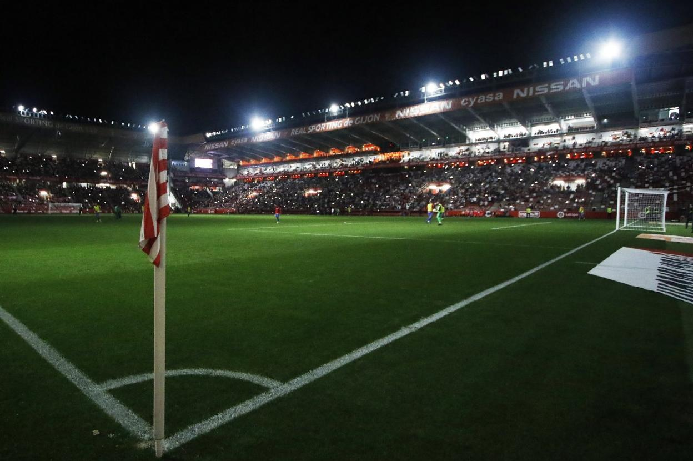
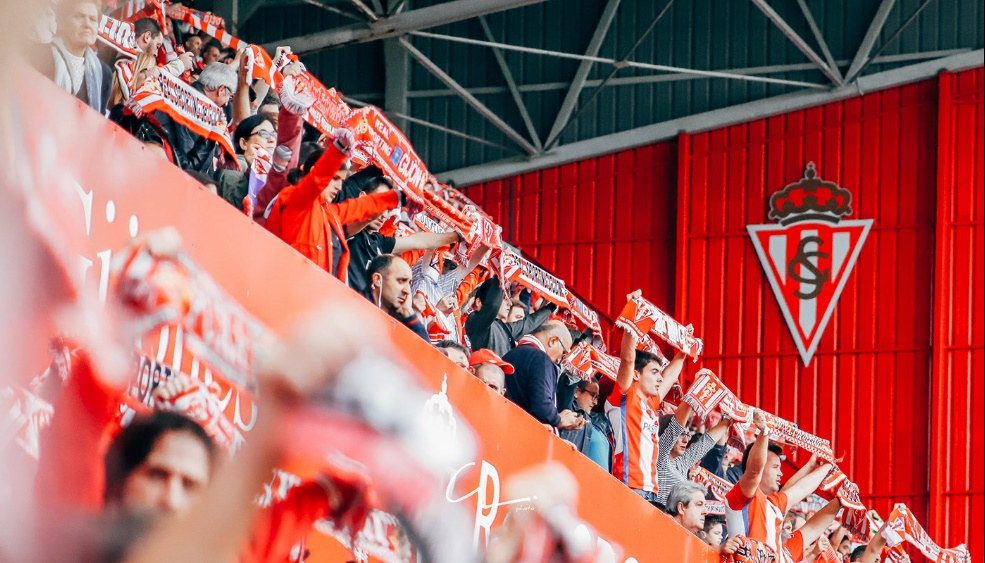

-
BIENVENIDOS AL TEMPLO
El Estadio El Molinón , oficialmente denominado Estadio Municipal El Molinón-Enrique Castro «Quini», es un recinto deportivo de titularidad municipal situado en la ciudad de Gijón, Asturias, España. Alberga los partidos que disputa como local el Real Sporting de Gijón y tiene una capacidad para 30 000 espectadores.Su nombre hace referencia a un gran molino hidráulico que se erigía en las inmediaciones de su localización, aunque no se conoce con exactitud la fecha en que fue construido; la primera reseña de un partido "en el campo del Molinón" aparece en el diario local El Comercio el 20 de mayo de 1908, En él se celebró la final de la Copa del Rey de 1920, fue una de las diecisiete sedes de la Copa Mundial de 1982 y ha albergado once encuentros de la selección española. También ostenta el récord absoluto de asistencia a un partido de fútbol en Asturias, con 43 000 espectadores, cantidad alcanzada en partidos de la Copa Mundial de 1982. Posteriormente, como consecuencia de la legislación que obligaba a que todas las localidades fueran de asiento, la capacidad del estadio descendió a 25 000 personas. Tras la reforma que se llevó a cabo entre 2009 y 2011, se aumentó hasta los 30 000 espectadores. Tras el fallecimiento de Quini el 27 de febrero de 2018, el Ayuntamiento de Gijón aprobó por unanimidad cambiar su denominación oficial a Estadio Municipal El Molinón-Enrique Castro «Quini».
 El Molinón era una finca propiedad de Julius Rimmel, nieto de Eugène Rimmel, que se llamaba así por estar al lado de un molino hidráulico de gran tamaño que se erigía en la zona, donde actualmente de ubica el Parador Nacional Molino Viejo. En el Diccionario toponímico del concejo de Gijón de Ramón d'Andrés, publicado por el Ayuntamiento de Gijón en 2008, se puede leer acerca del origen del nombre de El Molinón No se conoce con exactitud su fecha de construcción y la primera constancia documental de su existencia aparece en las páginas del diario local El Comercio el 20 de mayo de 1908, como referencia a un partido de fútbol disputado entre las sociedades La Bella Sportiva y El Balón tres días antes. La reseña de ese encuentro no lo presenta como algo excepcional, lo que podría indicar que la existencia del estadio es anterior. Este hecho lo convierte en el más antiguo de España. A comienzos de la década de 1910 era utilizado por el Gijón Sport Club como terreno para la disputa de los partidos y campeonatos que organizaba, y desde 1913 existen referencias de su uso por parte del Real Sporting de Gijón, entonces denominado Sporting Gijonés. El primer encuentro de competición nacional se disputó el 22 de abril de 1917 entre el Sporting y el Arenas Club; correspondía a la primera eliminatoria del Campeonato de España y venció el Arenas por 0-1. Ese mismo año se introdujeron diversas mejoras en el campo: la construcción de una nueva tribuna, el levantamiento de una empalizada de madera y la instalación de una puerta principal. La conclusión de las mismas se celebró el 5 de agosto con un acto que incluía actividades culturales y deportivas, como un partido de fútbol entre los veintidós mejores jugadores de la sociedad. El 2 de mayo de 1920 se jugó en El Molinón la final del Campeonato de España entre el Athletic Club y el F. C. Barcelona, en la que el equipo catalán se proclamó campeón del torneo por cuarta vez tras vencer por 2-0. El 20 de noviembre de 1924, el club lo adquirió en propiedad a Dionisio Cifuentes, su arrendador, por 40.000 pesetas. Entre marzo y abril de 1928 se acometieron nuevas reformas con motivo de la celebración de un partido amistoso entre España e Italia, el primero entre selecciones nacionales que tuvo lugar en El Molinón. La gradería con la que contaba el estadio se trasladó a uno de los fondos y se construyeron dos nuevas tribunas, una general y otra de preferencia, con las que se alcanzó una capacidad para albergar a 15 000 espectadores. La reforma se llevó a cabo por el arquitecto municipal Miguel García de la Cruz. El encuentro internacional tuvo lugar el 22 de abril y finalizó con el resultado de 1-1. Poco más de tres años después, el 27 de septiembre de 1931, la tribuna principal quedó destruida en dos terceras partes a causa de un incendio ocurrido tras el partido del Campeonato Regional que enfrentó al Sporting y al Racing de Santander. Dada la precaria situación económica del Sporting y los costes de la reconstrucción, el club lo vendió al Ayuntamiento en 1935. En diciembre de 1968 se instalaron cuatro torretas que dotaron al estadio de luz artificial, indispensable para la disputa de partidos por las noches. El primer partido disputado con iluminación artificial enfrentó al Sporting y al C. D. Mestalla. Entrada del partido que enfrentó a España y Checoslovaquia en El Molinón el 16 de abril de 1980. El 30 de noviembre de 1969 se inauguraron las cubiertas de las gradas general y sur, que convirtieron a El Molinón en el primer campo de fútbol de España con todas las gradas cubiertas. El 8 de febrero de 1970 se produjo la primera retransmisión en directo por televisión desde El Molinón: un encuentro entre el Sporting y el C. A. Osasuna; también fue este el primer partido de Segunda División en ser ofrecido en directo por televisión, y el primero televisado en Asturias. Ganó el Sporting por 3-0, con dos goles de Marañón y uno de Herrero II. El 25 de noviembre de 1979, en un partido disputado entre el Sporting y el Real Madrid C. F., se generó en la grada de El Molinón uno de los gritos más populares del fútbol español: el Así, así, así gana el Madrid, un cántico que se ha hecho famoso para criticar las supuestas ayudas arbitrales al club blanco y que, posteriormente, adoptaron los seguidores madridistas para celebrar las victorias de su equipo. A los siete minutos de aquel partido, una entrada de San José a Ferrero quedó sin sanción y, al hacerle el rojiblanco un gesto despectivo al madridista, el árbitro del encuentro, Ausocúa Sanz, expulsó al sportinguista. Monolito conmemorativo del Mundial 1982 en los aledaños del estadio. En la placa inferior aparecen las firmas de los jugadores de las cuatro selecciones del grupo B. Con motivo de las obras para la Copa Mundial de 1982 se afrontó una gran reforma. Se elevaron las gradas este y sur, y se alcanzó un aforo de casi 45 000 espectadores; 16 600 de ellos, sentados. Sin embargo, dos años después del campeonato del mundo, la Consejería de Comercio e Industria determinó reducir, por motivos de seguridad, la capacidad de El Molinón a 38 000 espectadores. El 25 de junio de 1982 se disputó en El Molinón el último partido del grupo B de la primera ronda de la competición, entre las selecciones Alemania y Austria; los alemanes, tras su derrota ante Argelia en el primer partido, necesitaban ganar para clasificarse para la segunda ronda, mientras que los austriacos se clasificaban aunque perdiesen por 1-0, ya que se producía un empate a cuatro puntos entre Alemania, Austria y Argelia, que clasificaba a los dos primeros por diferencia de goles. Y eso fue lo que ocurrió. Tras el primer gol alemán, obra de Hrubesch en el minuto 10, el partido se convirtió en una pachanga entre dos rivales que lo único que querían era que pasara el tiempo y clasificarse para la siguiente fase. La FIFA inició una investigación sobre los hechos pero no pudo llegar a ninguna conclusión. Eso sí, para evitar más problemas en la siguiente edición de la Copa del Mundo, México 1986, se estableció que en la última jornada de la primera fase se jugaran los dos partidos de cada grupo simultáneamente, como se sigue haciendo en la actualidad. Al día siguiente, la prensa local publicó la crónica del partido en la sección de Sucesos, refiriéndose a él como una estafa a 40 000 personas. El Molinón, durante un partido entre el Real Sporting de Gijón y el Athletic Club en la temporada 2011-12. Entre 1997 y 1998 también se realizaron obras en el campo para adecuarlo a las normativas de seguridad que marcaron la UEFA y la FIFA para los estadios de fútbol profesional. De esta forma, se hicieron todas las localidades de asiento y se retiraron las vallas de seguridad, pasando a una capacidad de 25 885 espectadores. También se dividieron las gradas en sectores independientes y se instalaron cámaras de seguridad. En 2006, se anunció un nuevo proyecto de remodelación integral del estadio que afectaba, entre otras cosas, a la imagen exterior del mismo, en la que colaboró el artista Joaquín Vaquero Turcios. La reforma se financió, por una parte, con la privatización de los locales existentes bajo las tribunas, ya que una empresa los explota comercialmente y, por la otra, con fondos municipales. En el proyecto se incluyó el refuerzo de la estructura de todo el estadio, la ampliación del fondo norte y una zona de la tribuna oeste, el cambio de todas la cubiertas del estadio, la creación de nuevos vestuarios y zonas mixtas para prensa, radio y televisión, además de una sala para entrevistas. También se sustituyeron todos los asientos para el público, que pasaron de tener una disposición en la que formaban franjas verticales rojas y blancas a otra en degradado: hay una mayor presencia de butacas rojas cerca del terreno de juego, mientras que el número de asientos blancos aumenta a medida que se asciende por el graderío. Con todas estas mejoras, el estadio dio un cambio radical en su aspecto exterior y en todas sus dotaciones, y fue homologado con la categoría 3 por la UEFA. Además, el aforo total aumentó hasta los 30 000 espectadores. El 28 de febrero de 2018, un día después del fallecimiento de Quini, el Ayuntamiento de Gijón aprobó por unanimidad cambiar su denominación oficial a Estadio Municipal El Molinón-Enrique Castro "Quini" como homenaje a su figura. El 25 de junio de 2022 el estadio fue el escenario, por primera vez en sus más de 110 años de historia, de un partido de rugby, en el que se enfrentaron la selección nacional de España, conocida como el XV del León y el combinado internacional Barbarian F.C. El encuentro finalizó 27-6, victoria de los Barbarian. En 2022, el nuevo propietario del Real Sporting, el mexicano Grupo Orlegi, propone la reconstrucción del estadio de cara a la candidatura hispano-lusa-ucraniana al Mundial de fútbol de 2030. En su estudio inicial presentan la construcción de un nuevo recinto de 300 millones de € y la conversión total del espacio circundante en zonas verdes.